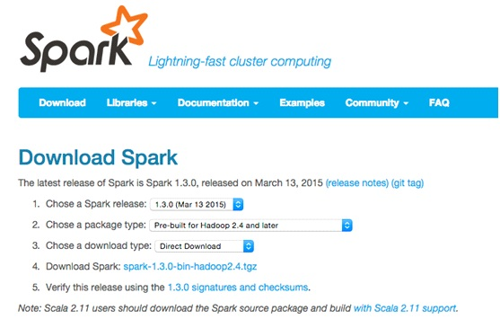
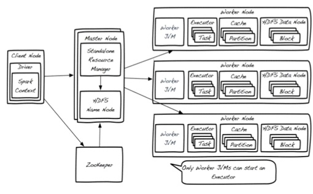

| 与 Spark 集成 / Spark 安装 |
不用 SequoiaDB Administration Console 来安装 Apache Spark 是非常简单的。
首先，你需要获取最新版本的 Spark framework。打开以下链接获取最新版本：http://spark.apache.org/downloads.html.
以 Spark1.3+Hadoop 2.4为例，下载文件名为“spark-1.3.0-bin-hadoop2.4.tgz”。

安装包可以通过以下指令获取：
$ tar –zxvf spark-1.3.0-bin-hadoop2.4.tgz –directory /opt/
当安装包文件获取后，你可以 cd 至他的目录下，使用 spark-shell 进行一个简单的试用：
$ cd /opt/spark-1.3.0-bin-hadoop2.4
$ bin/spark-shell 2>/dev/null
Welcome to
____ __
/ __/__ ___ _____/ /__
_\ \/ _ \/ _ `/ __/ '_/
/___/ .__/\_,_/_/ /_/\_\ version 1.3.0
/_/
Using Scala version 2.10.4 (Java HotSpot(TM) 64-Bit Server VM, Java 1.6.0_35)
Type in expressions to have them evaluated.
Type :help for more information.
Spark context available as sc.
SQL context available as sqlContext.
scala> val textFile = sc.textFile("README.md")
textFile: org.apache.spark.rdd.RDD[String] = README.md MapPartitionsRDD[1] at textFile at <console>:21
scala> textFile.count()
res0: Long = 98
scala> textFile.first()
res1: String = # Apache Spark
scala> textFile.filter(line => line.contains("Spark")).count()
res2: Long = 19
为了建立一个高可用的集群，集群至少需要3个物理主机。在这个例子中，我们将其命名为“server1”，“server2” 和 “server3”。
下载和安装需要在集群中的这三个主机下各执行一次。
当 Spark 安装后（安装路径假设为/opt/spark-1.3.0-bin-hadoop2.4），在部署为高可用的集群之前，还需要进行几部简单的操作。
1) 下载和配置 Apache ZooKeeper.
Apache ZooKeeper 是一个管理配置信息和命名的中央集中的服务。它提供分布式的同步和群组的服务，而所有这些服务都将会被分布式的应用所使用。
ZooKeeper下载地址：http://www.apache.org/dyn/closer.cgi/zookeeper
至少需要3个节点才能构成一个高可用的 ZooKeeper 集群。
当安装包被下载到每个主机时，以下指令会自动获取安装文件：
$ tar –zxvf zookeeper-3.4.6.tar.gz –directory /opt/
2) 调整 ZooKeeper 配置
$ cd /opt/zookeeper-3.4.6/conf $ cp zoo_sample.cfg zoo.cfg $ vi zoo.cfg
加入以下3行代码，并将 hostname 主机名替换为真实的主机地址：
server.1=server1:2888:3888 server.2=server2:2888:3888 server.3=server3:2888:3888
请记得修改“dataDir”（不可使用/tmp），如“/data/zookeeper”。
接着，在每个 server 创建 myid 文件。在这个例子中，可以针对每个 server 执行以下指令：
Server1: echo "1" > /data/zookeeper/myid Server2: echo "2" > /data/zookeeper/myid Server3: echo "3" > /data/zookeeper/myid
请注意，id 数需要与 zoo.cfg 中的 server.x 配置参数一致。
3) 启动ZooKeeper服务
以下指令可以在每个由 ZooKeeper 配置的主机执行：
$ bin/zkServer.sh start
你需要在3个节点都启动 ZooKeeper 服务。使用以下指令查看 ZooKeeper 服务的状态：
$ bin/zkServer.sh status
其中的一个节点应该会显示“Mode: leader”，其余的节点显示“Mode: follower”。
4) 在 Standalone 模式下配置 Apache Spark
Apache Spark 可以以不同模式运行。当结合 Spark 和 SequoiaDB 集群时，我们推荐使用 Spark 的 Standalone 模式。
因为本地数据访问优先于远程数据查找的，推荐将 Apache Spark 安装在所有的 SequoiaDB 数据库集群。
Apache Spark Standalone 模式的部署架构如下图：

Spark 集群中，可能存在多于一个的 Master 节点，而其中只有一个会是“Primary”（主要）的，其余的都是“Standby”（预备）模式。ZooKeeper 就被用于跟踪每个 Master 节点，确保时刻都有一个“Primary”节点存在。
推荐在每个 SequoiaDB 集群的主机中，运行一个 Worker 节点。
SequoiaDB 和 Apache Spark 对接需要相应的驱动，登录 https://oss.sonatype.org，搜索 sequoiadb-driver 下载 SequoiaDB 最新的 java 驱动， 搜索 spark-sequoiadb 下载 SequoiaDB 最新的 spark 驱动，注意 scala 版本，然后把他们复制集群中的每个节点 $SPARK_HOME/lib 目录。
Apache Spark 配置文件默认位于conf/spark-env.sh，假设 SequoiaDB 安装在 /opt/sequoiadb，你可以复制一个 spark-env.sh.template 后作出以下的配置修改：
SPARK_DAEMON_JAVA_OPTS="-Dspark.deploy.recoveryMode=ZOOKEEPER -Dspark.deploy.zookeeper.url=server1:2181,server2:2181,server3:2181 -Dspark.deploy.zookeeper.dir=/spark"
SPARK_WORKER_DIR=/data/spark_works
SPARK_LOCAL_DIRS=/data/spark_data1,/data/spark_data2
SPARK_CLASSPATH=${SPARK_HOME/lib/sequoiadb-driver-1.12.jar:$SPARK_HOME/lib/spark-sequoiadb_2.10-1.12.0.jar"
1. 替换 ${SPARK_HOME 为 Spark 的绝对路径。
2. spark.deploy.zookeeper.dir 配置的目录必须与其他主机上的配置一致。
下列的配置参数是非必须的，其基于硬件和负载设置。若通过 SequoiaDB Administration Center 安装，那么 SequoiaDB 将会自动设置这些参数：
SPARK_WORKER_MEMORY
5) 启动 Spark 的 master 节点
如果你想启动 Master 节点，以下指令可在你需要启动 Master 的主机执行：
$ cd /opt/spark-1.3.0-bin-hadoop2.4 $ sbin/start-master.sh
6) 启动 Spark 的 worker 节点
因为我们推荐在每个 SequoiaDB 集群的主机下都运行 Worker 节点，你可以运行以下指令来启动每个主机的 Worker 节点：
$ cd /opt/spark-1.3.0-bin-hadoop2.4 $ nohup bin/spark-class org.apache.spark.deploy.worker.Worker spark://serverA:7077,serverB:7077>logs/worker.out &